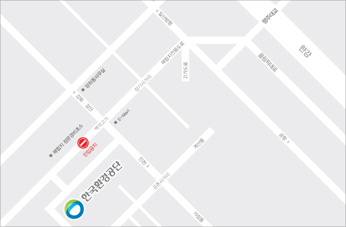
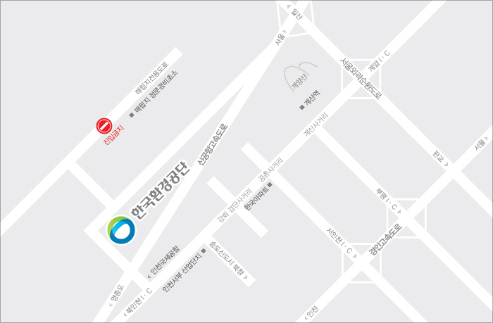
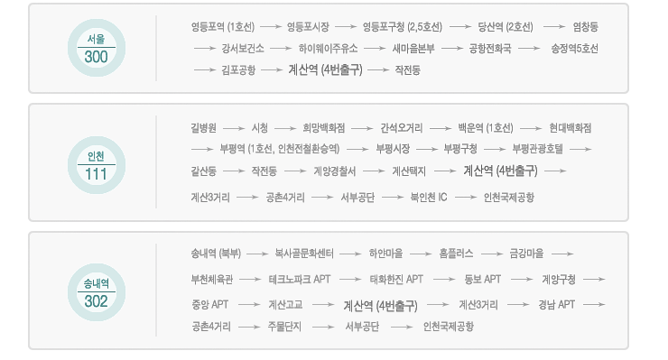

주소 : 인천광역시 서구 경서동 종합환경연구단지내
전화 : 032 - 590 - 4000 / 팩스 : 032 - 590 - 3229
올림픽대로ㆍ매립지전용도로 이용시

- 올림픽도로 김포공항 방면→행주대교 남단IC에서→부천방면(국도39번도로)→수도권매립지 방향진입11Km→백석고가에서 좌회전→공촌사거리에서 북인천IC방면 우회전→3.7Km지점 환경연구단지입구 우회전→한국환경공단
경인고속도로ㆍ외곽순환도로 이용시

- 외곽순환고속도로 이용시:인천 계양IC를 나와서 인천 계양구 방향으로 10.2km 직진 →환경연구단지 입구→한국환경공단, 경인고속도로 이용시:서울→서인천IC→지하차도를 진입 3km 직진→공촌사거리에서 좌회전→3.7km 지점에 환경연구단지입구 우회전→한국환경공단
대중교통
본사로 오실 수 있는 대중교통버스 운행정보

셔틀버스
셔틀버스, 이곳에서 타세요
- 계산역(인천) : 계산역 4번출구 30m 전방
- 검암역(인천) : 검암역앞 버스정류장 30m 후방
- 공촌사거리역(인천) : 인천공항방면 공촌사거리 버스정류장 30m 전방
평일(화요일 ~ 금요일)
| 운행회차 | 자원관출발 (공촌사거리 경유) |
검암역 | 공촌사거리 | 자원관 도착 |
|---|---|---|---|---|
| 1회 | - | 08:45 | 08:55 | 09:05 |
| 2회 | - | 10:00 | 10:10 | 10:20 |
| 3회 | - | 11:10 | 11:20 | 11:30 |
| 4회 | 13:00 | 13:30 | 13:40 | 13:50 |
| 5회 | 14:30 | 15:00 | 15:10 | 15:20 |
| 6회 | 16:00 | 16:30(종료) | - | - |
| 7회 동계(11~2월) | 17:10 | 17:40(종료) | - | - |
| 7회 하계(3~10월) | 17:40 | 18:10(종료) | - | - |
주말(토,일요일) 및 공휴일
| 운행회차 | 자원관출발 (공촌사거리/검암역경유) |
계산역 | 검암역 | 공촌사거리 | 자원관 도착 |
|---|---|---|---|---|---|
| 1회 | - | - | 08:45 | 08:55 | 09:05 |
| 2회 | - | 10:00 | 10:15 | 10:25 | 10:35 |
| 3회 | - | 11:00 | 11:15 | 11:25 | 11:35 |
| 4회 | 11:10 | 12:00 | 12:15 | 12:25 | 12:35 |
| 5회 | 12:10 | 13:00 | 13:15 | 13:25 | 13:35 |
| 6회 | 14:10 | 15:00 | 15:15 | 15:25 | 15:35 |
| 7회 | 15:10 | 16:00(종료) | - | - | - |
| 8회 | 16:10 | 16:50(종료) | - | - | - |
| 9회 | 17:10 | 18:00(종료) | - | - | - |
| 10회 하계(3~10월) | 17:40 | 18:30(종료) | - | - | - |
- 평일에는 계산역은 운행하지 않습니다.
- 경유지점 도착 및 출발시간은 교통사정에 따라 다소 지연될 수 있습니다.
- 셔틀버스는 45인승이므로 못타신 분은 대중교통을 이용하시기 바랍니다.
- 국립생물자원관 전시관 운영시간 : 09:30~17:30(11~2월 동계에만 17:00 폐관)
- 매주 월요일(정기휴관)에는 운행하지 않습니다.(토·일요일 및 공휴일은 정상운영)